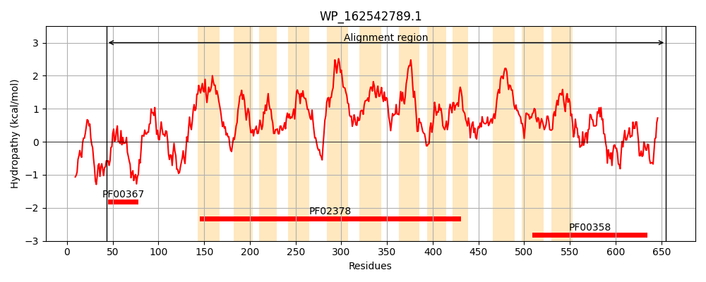
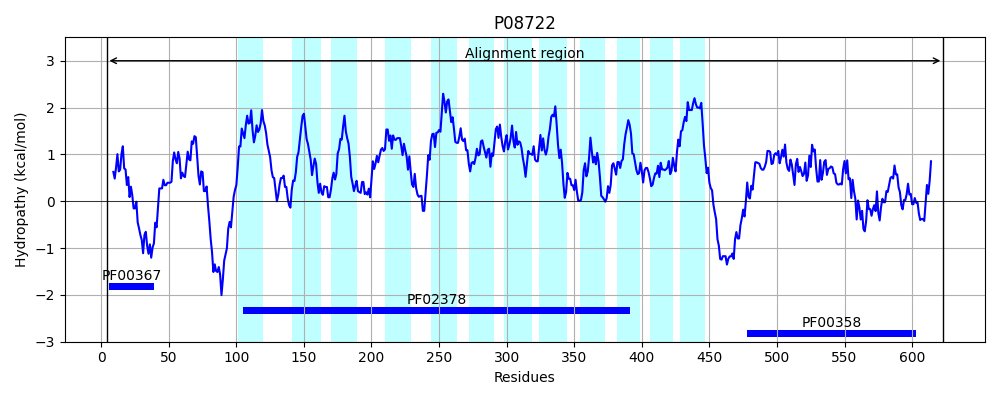
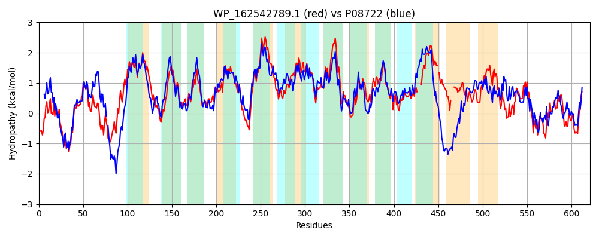

Hit Accession: P08722
Hit TCID: 4.A.1.2.2
Hit Description: gnl|BL_ORD_ID|8479 gnl|TC-DB|P08722|4.A.1.2.2 PTS system, beta-glucoside-specific IIABC component (EIIABC-BGL) (Beta-glucoside-permease IIABC component) (Phosphotransferase enzyme II, ABC component) (EC 2.7.1.69) (EII-BGL) - Escherichia coli.
Mach Len: 621
e:0.000000
Query TMS Count : 12
Hit TMS Count: 12
TMS-Overlap Score: 9.500000
Predicted Substrates:CHEBI:60980;beta-glucoside
BLAST Alignment:
Score: 1858 , Bit scores: 720 bits, E-value: 0.0e+00, Alignment length: 621, Percentage identity: 58
Query: 43 LAQDILNRVGGKENIVSLVHCATRLRFKLKDNGKADAEGLKANPGVIMVVESGGQFQVVIGNHVHDVWLAVRQEAGLSDDSEPVAGEKAAKGSVLSQLIDIISGIFTPFIGVMAATGLLKGLLALAVTCGWLTPEQGTYKIWFAASDALFFFFPLFLGYTAGKKFGGNPFISMVIGGALTHPLMIQAFEASQAPGAAVEHFLGIPVTFINYSSSVIPIILASWVCCWLERKSNALLPSSMKNFFTPAICLAVVVPLTFLVIGPVATWLSHLLANGYQFIYAFAPWLAGAVLGAMWQVCVIFGLHWGLVPLMINNMTVLGHDSMLPIILPAVIAQVGAVLGILLATRDARQRMLAGSAFSAGLFGITEPAIYGLTLPLRRPFIFGCIAGAIGGAITAFSNSHAYSFGVPNIFFPAQMIPPGGIDATVW----GGLIGTGVAFVLACVLTFF-AGMPRASAAPGAVT---VAPASANDILAPMSGSVIALEQVPDSTFASGLLGKGVAIIPAVGQVIAPFPGEVASLFQTKHAIGLQSDSGIELLIHVGIDTVKLDGVPFTAHVKEGDRVQAGDLLIEFDRQAILDAGYDLATPIIISNSDDYREIDTVASSAVEAGQPLLSV 655
LA+ I+ VGG +NIVSL+HCATRLRFKLKD KA AE LK PG+IMVVESGGQFQVVIGNHV DV+LAV AGL D+ A E KG++L++ + +ISGIFTP IG+MAATG+LKG+LALA+T W T + GTY I F+ASDALF+FFP+ LGYTAGK+FGGNPF +MVIGGAL HPL++ AFE Q A FLGIPVT +NYSSSVIPII ++W+C LER+ NA LPS++KNFFTP +CL V+ P+TFL++GP++TW+S L+A GY ++Y P AGAV+G WQ+ V+FGLHWGLVPL INN TVLG+D+M+P+++PA++AQVGA LG+ L RDA+++++AGSA LFGITEPA+YG+ LP + PF+ CI+GA+G I ++ + YSFG+P+IF Q IP GID TVW GG+I G AFV +L F A A AP T + P I +PM+G ++ L V D+TFASGLLGKG+AI+P+VG+V +P G +ASLF T HAIG++SD G+E+LIHVGIDTVKLDG F+AHV GD+V GD LI FD AI +AG+DL TP++ISNSDD+ ++ ++ + AG+PLLS+
Sbjct: 4 LARKIVAGVGGADNIVSLMHCATRLRFKLKDESKAQAEVLKKTPGIIMVVESGGQFQVVIGNHVADVFLAVNSVAGL-DEKAQQAPENDDKGNLLNRFVYVISGIFTPLIGLMAATGILKGMLALALTFQWTTEQSGTYLILFSASDALFWFFPIILGYTAGKRFGGNPFTAMVIGGALVHPLILTAFENGQKADALGLDFLGIPVTLLNYSSSVIPIIFSAWLCSILERRLNAWLPSAIKNFFTPLLCLMVITPVTFLLVGPLSTWISELIAAGYLWLYQAVPAFAGAVMGGFWQIFVMFGLHWGLVPLCINNFTVLGYDTMIPLLMPAIMAQVGAALGVFLCERDAQKKVVAGSAALTSLFGITEPAVYGVNLPRKYPFVIACISGALGATIIGYAQTKVYSFGLPSIFTFMQTIPSTGIDFTVWASVIGGVIAIGCAFVGTVMLHFITAKRQPAQGAPQEKTPEVITPPEQGGICSPMTGEIVPLIHVADTTFASGLLGKGIAILPSVGEVRSPVAGRIASLFATLHAIGIESDDGVEILIHVGIDTVKLDGKFFSAHVNVGDKVNTGDRLISFDIPAIREAGFDLTTPVLISNSDDFTDVLPHGTAQISAGEPLLSI 623 | Protein Hydropathy Plots: |
|---|
|  |  |
Pairwise Alignment-Hydropathy Plot:
|
|---|
|  |